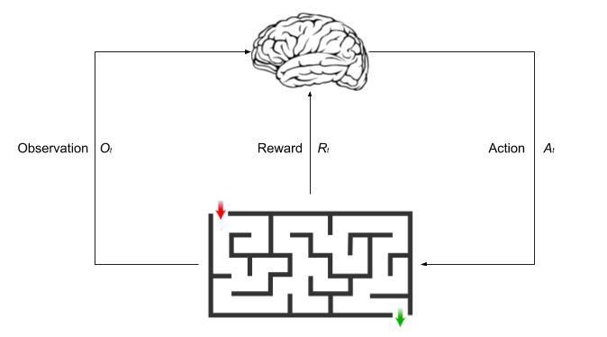

MuZero: A Corner Stone for AI
Sudhanv Apte
Table of Contents
Reinforcement Learning
Reinforcement learning is an area of machine learning concerned with how intelligent agents ought to take actions in an environment in order to maximize the notion of cumulative reward.
Terminology
- Agent
- Reward
- Value
- Policy
- Model

History
Go
Go is known as the most challenging classical game for artificial intelligence because of its complexity. There are more than 10 ^ 170 different positions.

AlphaGo
AlphaGo was the first computer program to play Go well enough to beat the world’s leading champion.
How does AlphaGo solve it?
AlphaGo is based on combination of a Deep Neural Network and MCTS It has three components:
- Policy Network
- Value Network
- Tree Search